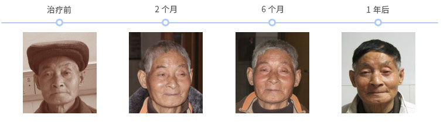

一、干细胞治疗肝硬化
1、病情描述
A先生：67岁，酒精性肝硬化患者。 2009年开始每月一次肝昏迷，今2010年7月开始 每半个月肝昏迷一次 ；睡眠要吃药，要有专门护工护理。治疗前检查：乏力中度、腹胀中度、慢性肝病面容中度、皮肤巩膜黄染中度、脾肿大中度、头发全白。
2、制定方案：
制定免疫细胞抗肿瘤+干细胞功能再生疗程。
3、效果
治疗后（二个月）检查结果：乏力现象无、腹胀无、慢性肝病面容轻度、皮肤巩膜黄染轻度、脾肿大轻度、后脑已长出一片黑发。已出院，无肝昏迷现象；现可自己打水烧饭、并下地做农活。白蛋白从27增加到
37，肝纤维化透明质酸从755.6降低到552.1。
